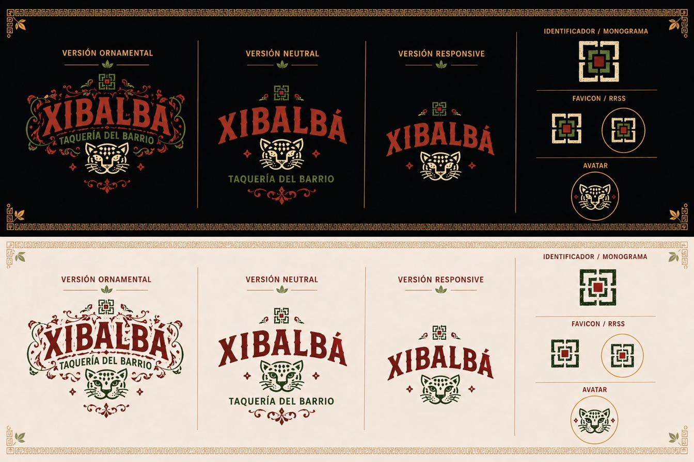
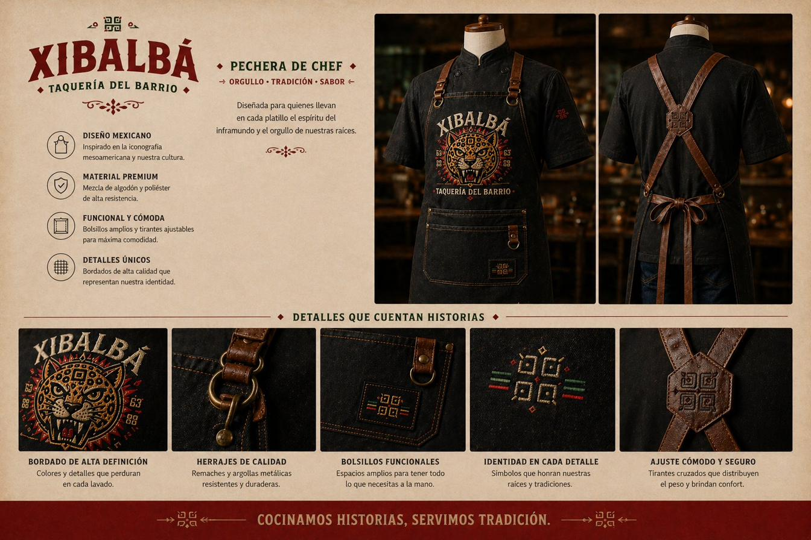
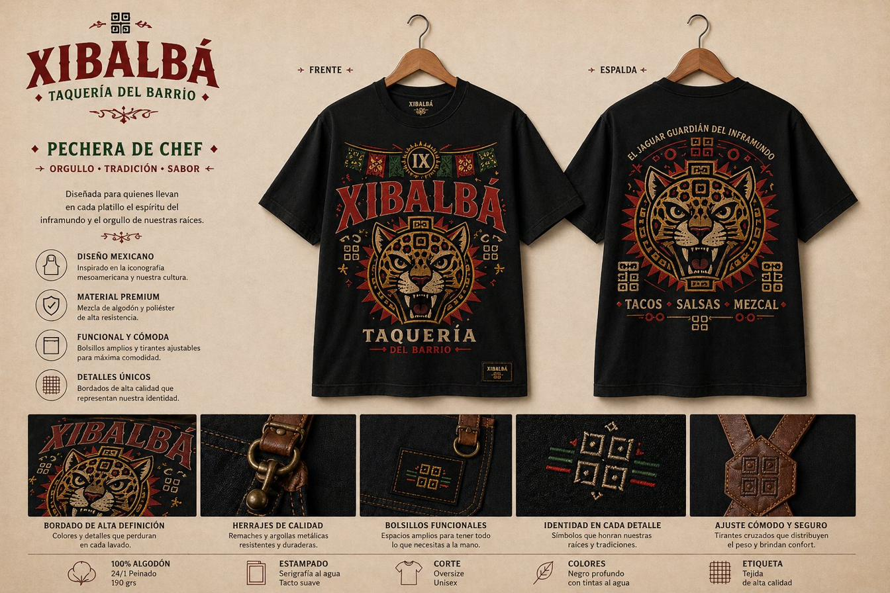
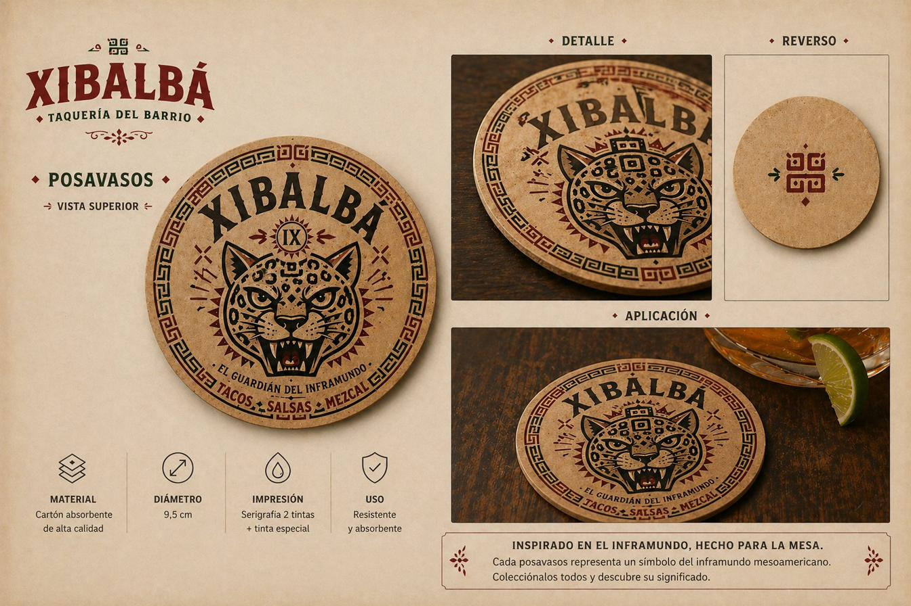
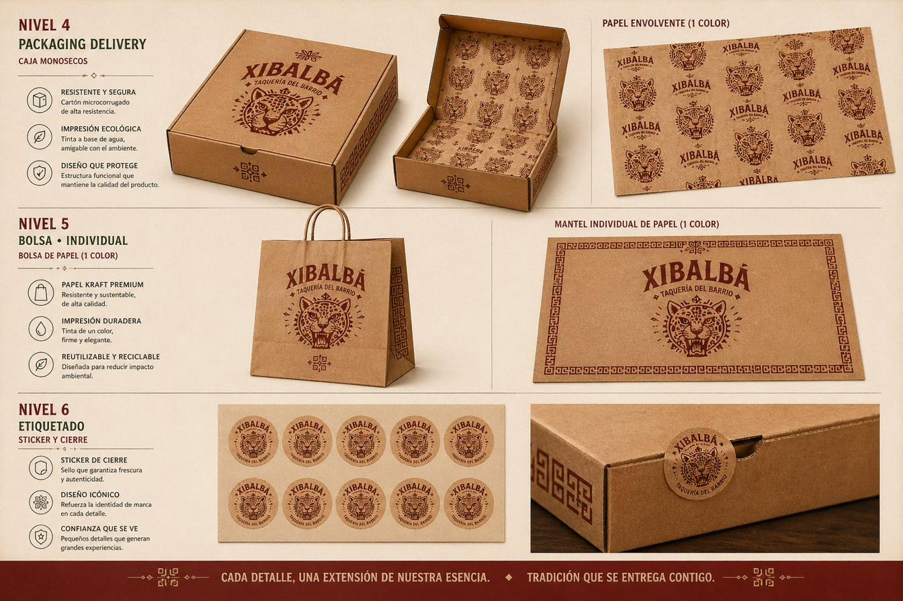
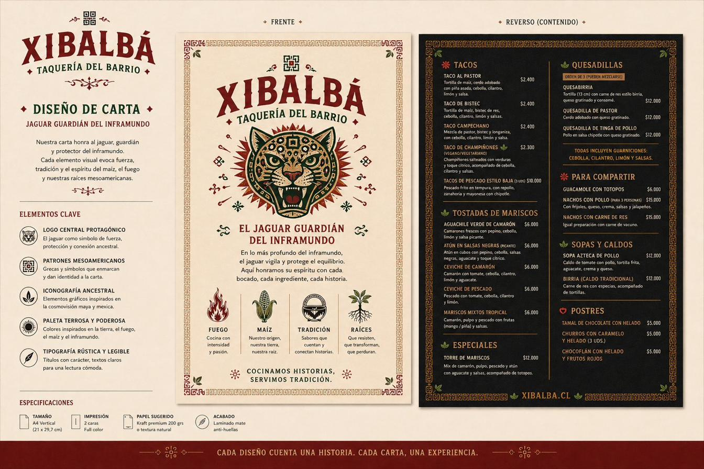

Inspirado en la cosmovisión mesoamericana, Xibalbá representa el tránsito, la transformación y la energía que emerge desde lo profundo. El jaguar — símbolo ancestral de poder — se convierte en el guardián de esta experiencia: una taquería que honra al ritual, lo cotidiano y lo simbólico.
Tipografía slab con presencia, jaguar como guardián central, ornamentos vintage de cantina mexicana. La marca se siente cálida, festiva y profundamente cultural.

Versión ornamental · neutral · responsive · monograma · favicon · avatar
Colores que evocan la sazón mesoamericana: rojo barro de la pasión, naranja quemado del fogón, verde tierra del equilibrio, negro tinta del contraste, y crema como soporte cálido.
"Orgullo · tradición · sabor". Diseñada para quienes llevan en cada platillo el espíritu del inframundo. Bordados de alta definición, herrajes de calidad, detalles que cuentan historias.

Polera frente y espalda con el guardián a todo volumen. Estampado serigráfico al agua, corte oversize unisex, 100% algodón peinado. "El jaguar, guardián del inframundo".

Cartón absorbente de alta calidad, 9.5 cm, serigrafía 2 tintas + tinta especial. "El guardián del inframundo · Tacos · Salsas · Mezcal". Coleccionables, que cuentan un símbolo distinto.

Caja de cartón micro-corrugado con tinta a base de agua, bolsa kraft premium, papel envoltorio con patrón del jaguar, stickers de cierre. Tradición que se entrega contigo.

Carta A4 vertical, dos caras: portada cálida con la historia del jaguar, reverso negro con el menú. Papel kraft premium 200 grs, laminado mate anti-huellas.

"Cocinamos historias, servimos tradición."